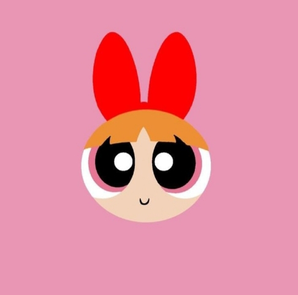
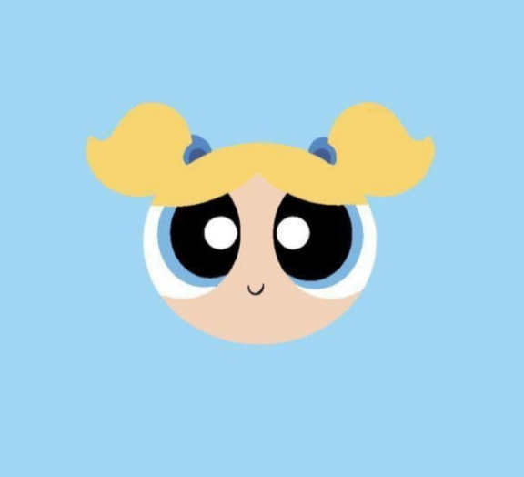
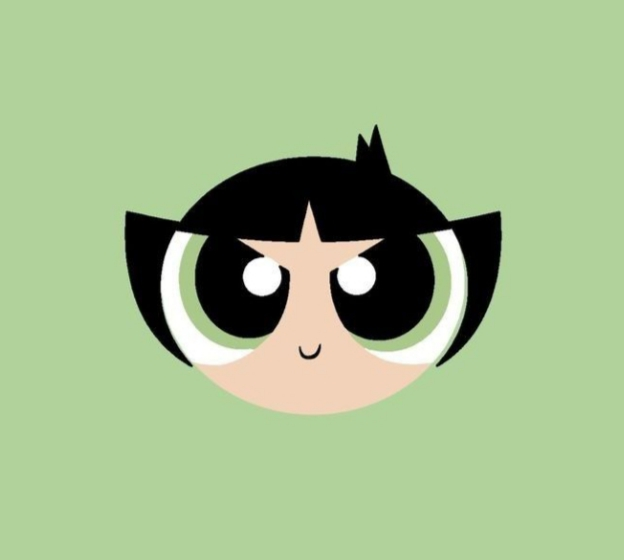

Sobre as Meninas Superpoderosas
Florzinha, Lindinha e Docinho são um trio de super-heroínas criadas pelo Professor Utônio. Em um experimento, ele misturou açúcar, tempero e tudo o que há de bom, porém acabou derrubando o Elemento X na mistura. A fórmula explodiu e deu vida a três irmãs superpoderosas.
Vídeo
Florzinha

Florzinha é a líder do grupo. Ela é responsável, inteligente, racional, organizada e perfeccionista. Tem sempre o instinto protetor para proteger, cuidar e ajudar as suas irmãs a proteger Townsville.
Lindinha

Lindinha é a mais doce e carinhosa das irmãs. Ela é alegre, sensível e adora ajudar os outros. Apesar de parecer delicada, também é uma super-heroína corajosa.
Docinho

Docinho é a mais forte e corajosa das irmãs. Ela é determinada, divertida e não tem medo de enfrentar os vilões. Está sempre pronta para proteger suas irmãs e Townsville.